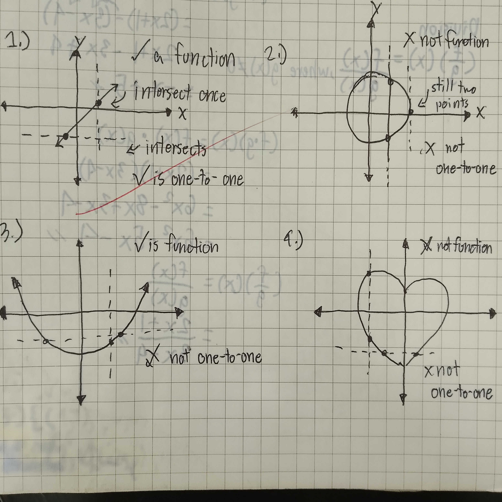

Relation is a relationship between two quantities.
Classification of Relations
Function is a special type of function in which the domain x corresponds to exactly one value of the range y.
Representation:
| Given | Is Function? | Relation Classification |
|---|---|---|
| { (1, 2), (2, 3), (4, 5), } | function | one-to-one |
| { (2, 3), (2, 4), (1, 5), } | not function | one-to-many |
| { (4, 1), (3, 1), (5, 2), } | function | many-to-one |
| { (2, 8), (2, 6), (1, 8), } | not function | many-to-many |
Vertical Line Test is used to determine whether graph is function or not. When vertical line intersects once, its a function, otherwise no.
Horizontal Line Test is used whether function is one-to-one. Same conditions as Vertical Line Test but horizontally.
